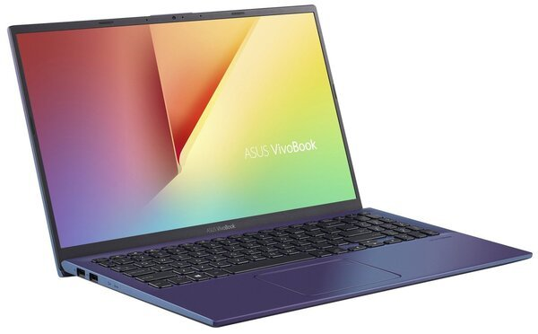

ASUS Transformer Book T100TA(T100TA-DK002H)
- Ноутбук
- 2-в-1 со съемным экраном
- 10,1"
- IPS
- 1366x768
- Intel Atom Z3740
- 1,33 ГГц
- ОЗУ: 2 ГБ
- Intel HD Graphics
- SSD: 32 (eMMC) ГБ
- 0,55 (планшет), 0,52 (док-станция) кг
- ОС: Windows 8
- цвет: серый
- 12.2013
- Модель из линейки Transformer Book T100TA
Вопросы и ответы (20)
Добавить в избраное
13 999
13 500 - 14 700
Все предложения (32)